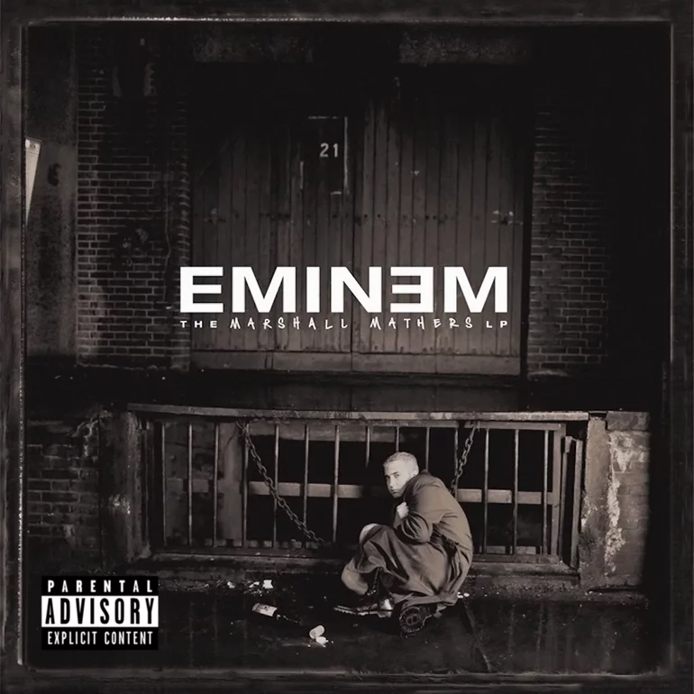

On May 23, 2000, Eminem dropped The Marshall Mathers LP, an 18-track juggernaut that debuted at #1 on the Billboard 200 and went Diamond, selling over 11 million copies in the U.S. alone. Following the breakout success of The Slim Shady LP, this album doubled down on controversy and brilliance. Here’s a deep dive into this rap landmark:
The album’s cover—Eminem slumped outside a bleak house—reflects its core: a brutal, unflinching look at fame, rage, and identity. The Marshall Mathers LP blends Slim Shady’s cartoonish chaos with Marshall Mathers’ real pain, from the venomous “Kill You” to the haunting “Stan.” Tracks like “The Way I Am” lash out at critics and fans, while “Kim” dives into dark domestic turmoil. It’s a middle finger to the world and a mirror to himself—raw, provocative, and deeply personal. This is Eminem at his most exposed, teetering between genius and madness.
Produced by Dr. Dre, Eminem, and the Bass Brothers, with Mel-Man and F.B.T. adding texture, The Marshall Mathers LP is a sonic gut punch. The beats are crisp yet ominous—“Stan” builds on Dido’s melancholy sample, while “The Real Slim Shady” pops with playful funk. “Bitch Please II” thumps with West Coast grit, and “Marshall Mathers” simmers with eerie minimalism. Eminem’s flow—sharp, relentless, and multi-syllabic—cuts through the production, balancing Dre’s polish with his own raw edge. It’s a step up from Slim Shady’s roughness, tighter and more cinematic.
The Marshall Mathers LP boasts a stacked lineup that elevates its intensity. Dido’s haunting vocals anchor “Stan,” while Dr. Dre, Snoop Dogg, Xzibit, and Nate Dogg bring G-funk fire to “Bitch Please II.” RBX and Sticky Fingaz snarl on “Remember Me?,” and Dina Rae adds sultry hooks to “Drug Ballad.” These guests don’t overshadow—they’re pieces in Eminem’s puzzle, amplifying his vision without stealing the mic.
Eminem’s Infinite (1996) was a technical but overlooked debut, followed by the Slim Shady EP (1997) and The Slim Shady LP (1999), which introduced his shock-rap persona. The Marshall Mathers LP builds on Slim Shady’s chaos, sharpening the production and deepening the introspection. Where Slim Shady was a wild breakout, this album is a refined explosion—less cartoonish, more real, and unafraid to confront the fallout of fame.
The Marshall Mathers LP is a 67-minute tour de force—18 tracks of razor-sharp rhymes, dark humor, and raw vulnerability. It’s Eminem at his peak, weaponizing fame’s chaos into a masterpiece that’s equal parts shocking and soul-baring. Skits like “Public Service Announcement 2000” and weaker cuts like “Under the Influence” pad the runtime, but the core is flawless. This isn’t just rap—it’s a cultural earthquake, cementing Eminem as a generational voice. It’s messy, brilliant, and unforgettable.
Originality (20/20): A groundbreaking blend of shock, skill, and storytelling.
Production Quality (19/20): Polished and dynamic, with skits as the only snag.
Lyrics and Messaging (20/20): Masterful—witty, raw, and deeply layered.
Enjoyment Factor (19/20): A gripping, intense ride that rarely falters.
Consistency (18/20): Near-perfect, though skits and a few tracks dilute the flow.
The Marshall Mathers LP isn’t just an album—it’s a statement, a raw nerve exposed to the world. It’s Eminem at his most daring, turning personal demons into art that’s as polarizing as it is profound. In rap’s pantheon, this stands as a towering achievement—a chaotic, masterful snapshot of a genius in his prime.